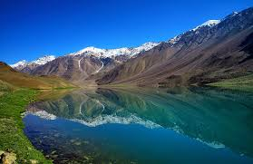

PLACES TO VISIT IN JUNE
June is a great time to explore the lush hill stations and cultural gems of India. From the serene backwaters of Kerala to the cool retreats of Shimla and Manali in Himachal Pradesh, there's something for every traveler. Experience the monsoon magic in Munnar's tea gardens, embark on wildlife safaris in Jim Corbett National Park, or immerse yourself in the vibrant festivals of Rajasthan. India in June promises a blend of natural beauty, cultural richness, and unforgettable experiences.

Leh-Ladakh, Jammu & Kashmir
- Scenic Beauty: Leh-Ladakh is renowned for its stunning landscapes, including high-altitude desert plains, shimmering lakes like Pangong and Tso Moriri, and rugged mountains.
- Cultural Experience: Explore ancient Buddhist monasteries such as Hemis and Thiksey, and witness local traditions during festivals like Hemis Festival in June.
- Adventure Opportunities: Engage in thrilling activities such as trekking in the Markha Valley, river rafting in the Zanskar River, and exploring challenging mountain passes like Khardung La.
-
Coorg, Karnataka
Coorg, also known as Kodagu, is a serene hill station in Karnataka famous for its coffee plantations, lush greenery, and pleasant weather during June, offering a tranquil retreat amidst nature.
- Coffee Plantations: Experience the aroma of freshly brewed coffee while visiting picturesque coffee estates and learning about coffee cultivation.
- Natural Beauty: Enjoy scenic views of mist-covered hills, cascading waterfalls like Abbey Falls and Iruppu Falls, and serene lakes such as Lake Honnamana Kere.
- Outdoor Activities: Engage in activities like trekking in the Brahmagiri Hills, wildlife spotting in Nagarhole National Park, and exploring ancient temples and forts.
3. Darjeeling, West Bengal
Darjeeling, known as the "Queen of the Hills," is famous for its tea gardens, panoramic views of the Himalayas, and the UNESCO World Heritage Darjeeling Himalayan Railway, offering a charming blend of colonial charm and natural beauty.
-
Tea Tourism: Visit renowned tea estates like Happy Valley Tea Estate, learn about tea processing, and enjoy scenic tea garden walks.
- Himalayan Views: Witness breathtaking sunrise views over the Kanchenjunga mountain range from Tiger Hill and enjoy panoramic vistas from viewpoints like Batasia Loop.
- Cultural Heritage: Ride the historic Darjeeling Toy Train, explore colonial-era architecture, visit Tibetan monasteries like Ghoom Monastery, and indulge in local cuisine and handicrafts.